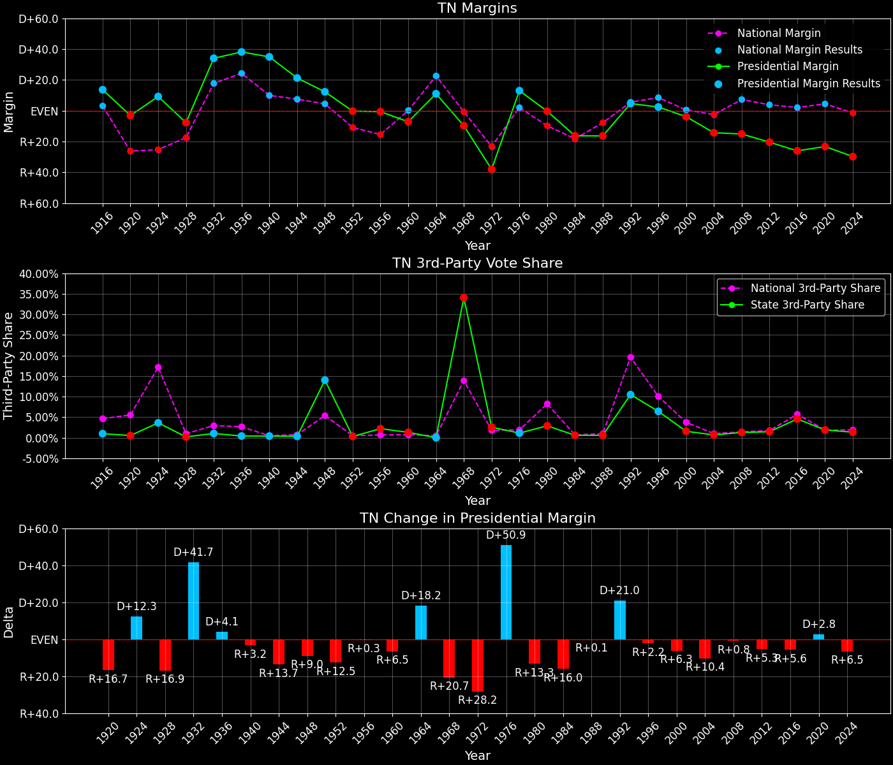
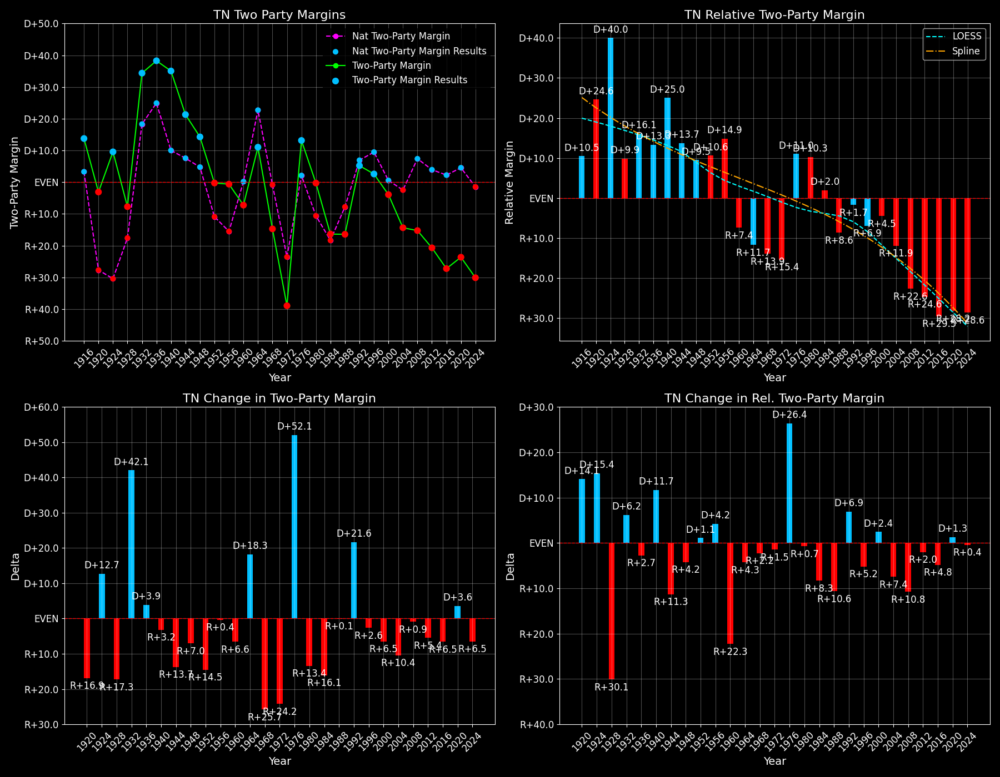

Tennessee (TN) — Statewide

Margins · 3rd-Party share · Pres. deltas

Relative margins · Relative 3rd-Party · Rel. deltas
Tennessee (TN) — Total Data
| Year | D | R | State Margin | Nat. Margin | Rel. Margin | Total votes | EVs |
|---|---|---|---|---|---|---|---|
| 1916 | 153,280(56.3%) | 116,223(42.7%) | D+13.6 | D+3.1 | D+10.5 | 272,190 | 12 |
| 1920 | 206,558(48.2%)(Δ 53,278) | 219,829(51.3%)(Δ 103,606) | R+3.1(Δ R+16.7) | R+26.2(Δ R+29.3) | D+23.1(Δ D+12.6) | 428,626(Δ 156,436) | 12 |
| 1924 | 158,537(52.8%)(Δ -48,021) | 130,882(43.6%)(Δ -88,947) | D+9.2(Δ D+12.3) | R+25.2(Δ D+1.0) | D+34.4(Δ D+11.4) | 300,275(Δ -128,351) | 12 |
| 1928 | 167,343(46.0%)(Δ 8,806) | 195,388(53.8%)(Δ 64,506) | R+7.7(Δ R+16.9) | R+17.4(Δ D+7.8) | D+9.7(Δ R+24.7) | 363,473(Δ 63,198) | 12 |
| 1932 | 259,473(66.5%)(Δ 92,130) | 126,752(32.5%)(Δ -68,636) | D+34.0(Δ D+41.7) | D+17.8(Δ D+35.2) | D+16.2(Δ D+6.5) | 390,256(Δ 26,783) | 11 |
| 1936 | 328,083(68.8%)(Δ 68,610) | 146,520(30.7%)(Δ 19,768) | D+38.1(Δ D+4.1) | D+24.3(Δ D+6.5) | D+13.8(Δ R+2.4) | 476,538(Δ 86,282) | 11 |
| 1940 | 351,601(67.3%)(Δ 23,518) | 169,153(32.4%)(Δ 22,633) | D+34.9(Δ R+3.2) | D+10.0(Δ R+14.3) | D+24.9(Δ D+11.1) | 522,823(Δ 46,285) | 11 |
| 1944 | 308,707(60.4%)(Δ -42,894) | 200,311(39.2%)(Δ 31,158) | D+21.2(Δ R+13.7) | D+7.5(Δ R+2.5) | D+13.7(Δ R+11.2) | 510,692(Δ -12,131) | 12 |
| 1948 | 270,402(49.1%)(Δ -38,305) | 202,914(36.9%)(Δ 2,603) | D+12.3(Δ R+9.0) | D+4.5(Δ R+3.0) | D+7.8(Δ R+6.0) | 550,283(Δ 39,591) | 12 |
| 1952 | 443,710(49.7%)(Δ 173,308) | 446,147(50.0%)(Δ 243,233) | R+0.3(Δ R+12.5) | R+10.9(Δ R+15.3) | D+10.6(Δ D+2.8) | 892,553(Δ 342,270) | 11 |
| 1956 | 456,507(48.6%)(Δ 12,797) | 462,288(49.2%)(Δ 16,141) | R+0.6(Δ R+0.3) | R+15.4(Δ R+4.5) | D+14.8(Δ D+4.2) | 939,404(Δ 46,851) | 11 |
| 1960 | 481,453(45.8%)(Δ 24,946) | 556,577(52.9%)(Δ 94,289) | R+7.1(Δ R+6.5) | D+0.2(Δ D+15.6) | R+7.3(Δ R+22.1) | 1,051,792(Δ 112,388) | 11 |
| 1964 | 634,947(55.5%)(Δ 153,494) | 508,965(44.5%)(Δ -47,612) | D+11.0(Δ D+18.2) | D+22.6(Δ D+22.4) | R+11.6(Δ R+4.3) | 1,143,946(Δ 92,154) | 11 |
| 1968 | 351,233(28.1%)(Δ -283,714) | 472,592(37.8%)(Δ -36,373) | R+9.7(Δ R+20.7) | R+0.7(Δ R+23.3) | R+9.0(Δ D+2.6) | 1,248,617(Δ 104,671) | 11 |
| 1972 | 357,293(29.7%)(Δ 6,060) | 813,147(67.7%)(Δ 340,555) | R+38.0(Δ R+28.2) | R+23.1(Δ R+22.4) | R+14.8(Δ R+5.8) | 1,201,182(Δ -47,435) | 10 |
| 1976 | 825,879(55.9%)(Δ 468,586) | 633,969(42.9%)(Δ -179,178) | D+13.0(Δ D+50.9) | D+2.1(Δ D+25.2) | D+10.9(Δ D+25.7) | 1,476,346(Δ 275,164) | 10 |
| 1980 | 783,051(48.4%)(Δ -42,828) | 787,761(48.7%)(Δ 153,792) | R+0.3(Δ R+13.3) | R+9.7(Δ R+11.8) | D+9.4(Δ R+1.5) | 1,617,616(Δ 141,270) | 10 |
| 1984 | 711,714(41.6%)(Δ -71,337) | 990,212(57.8%)(Δ 202,451) | R+16.3(Δ R+16.0) | R+18.2(Δ R+8.5) | D+1.9(Δ R+7.5) | 1,711,993(Δ 94,377) | 11 |
| 1988 | 679,794(41.5%)(Δ -31,920) | 947,233(57.9%)(Δ -42,979) | R+16.3(Δ R+0.1) | R+7.7(Δ D+10.5) | R+8.6(Δ R+10.6) | 1,636,250(Δ -75,743) | 11 |
| 1992 | 933,521(47.1%)(Δ 253,727) | 841,300(42.4%)(Δ -105,933) | D+4.7(Δ D+21.0) | D+5.6(Δ D+13.3) | R+0.9(Δ D+7.7) | 1,982,638(Δ 346,388) | 11 |
| 1996 | 909,146(48.0%)(Δ -24,375) | 863,530(45.6%)(Δ 22,230) | D+2.4(Δ R+2.2) | D+8.5(Δ D+3.0) | R+6.1(Δ R+5.2) | 1,894,105(Δ -88,533) | 11 |
| 2000 | 981,720(47.3%)(Δ 72,574) | 1,061,949(51.1%)(Δ 198,419) | R+3.9(Δ R+6.3) | D+0.5(Δ R+8.0) | R+4.4(Δ D+1.7) | 2,076,181(Δ 182,076) | 11 |
| 2004 | 1,036,477(42.5%)(Δ 54,757) | 1,384,375(56.8%)(Δ 322,426) | R+14.3(Δ R+10.4) | R+2.5(Δ R+3.0) | R+11.8(Δ R+7.4) | 2,437,319(Δ 361,138) | 11 |
| 2008 | 1,087,437(41.8%)(Δ 50,960) | 1,479,178(56.9%)(Δ 94,803) | R+15.1(Δ R+0.8) | D+7.3(Δ D+9.7) | R+22.3(Δ R+10.5) | 2,599,749(Δ 162,430) | 11 |
| 2012 | 960,709(39.1%)(Δ -126,728) | 1,462,330(59.5%)(Δ -16,848) | R+20.4(Δ R+5.3) | D+3.9(Δ R+3.4) | R+24.3(Δ R+1.9) | 2,458,577(Δ -141,172) | 11 |
| 2016 | 870,695(34.7%)(Δ -90,014) | 1,522,925(60.7%)(Δ 60,595) | R+26.0(Δ R+5.6) | D+2.1(Δ R+1.8) | R+28.1(Δ R+3.8) | 2,508,027(Δ 49,450) | 11 |
| 2020 | 1,143,711(37.5%)(Δ 273,016) | 1,852,475(60.7%)(Δ 329,550) | R+23.2(Δ D+2.8) | D+4.5(Δ D+2.4) | R+27.7(Δ D+0.4) | 3,053,851(Δ 545,824) | 11 |
| 2024 | 1,056,265(34.5%)(Δ -87,446) | 1,966,865(64.2%)(Δ 114,390) | R+29.7(Δ R+6.5) | R+1.5(Δ R+5.9) | R+28.2(Δ R+0.6) | 3,063,942(Δ 10,091) | 11 |
Column explanations
- Δ
- Change (delta) in the value from the previous election year.
- Year
- Election year.
- D
- Number of votes for the Democratic candidate (raw count(pct%)).
- R
- Number of votes for the Republican candidate (raw count(pct%)).
- State Margin
- Margin between the two major-party candidates, including third-party votes ((D - R)/total).
- Nat. Margin
- The national presidential margin for that year, including third-party votes ((D_total - R_total)/total_votes).
- Rel. Margin
- The presidential margin relative to the national presidential margin (Margin - Nat. Margin).
- Total votes
- Total voter turnout or ballots cast (when provided).
- EVs
- Number of electoral votes allocated to this state or unit.
Tennessee (TN) — Third-Party Data
| Year | D | R | Other votes | State 3rd-Party Share | 3rd-Party Nat. Share | 3rd-Party Rel. Share |
|---|---|---|---|---|---|---|
| 1916 | 153,280(56.3%) | 116,223(42.7%) | 2,687(1.0%) | 0.99% | 4.64% | -3.66% |
| 1920 | 206,558(48.2%)(Δ 53,278) | 219,829(51.3%)(Δ 103,606) | 2,239(0.5%) | 0.52% | 5.53% | -5.01% |
| 1924 | 158,537(52.8%)(Δ -48,021) | 130,882(43.6%)(Δ -88,947) | 10,856(3.6%) | 3.62% | 17.14% | -13.52% |
| 1928 | 167,343(46.0%)(Δ 8,806) | 195,388(53.8%)(Δ 64,506) | 742(0.2%) | 0.20% | 0.99% | -0.79% |
| 1932 | 259,473(66.5%)(Δ 92,130) | 126,752(32.5%)(Δ -68,636) | 4,031(1.0%) | 1.03% | 2.94% | -1.91% |
| 1936 | 328,083(68.8%)(Δ 68,610) | 146,520(30.7%)(Δ 19,768) | 1,935(0.4%) | 0.41% | 2.66% | -2.25% |
| 1940 | 351,601(67.3%)(Δ 23,518) | 169,153(32.4%)(Δ 22,633) | 2,069(0.4%) | 0.40% | 0.48% | -0.09% |
| 1944 | 308,707(60.4%)(Δ -42,894) | 200,311(39.2%)(Δ 31,158) | 1,674(0.3%) | 0.33% | 0.72% | -0.39% |
| 1948 | 270,402(49.1%)(Δ -38,305) | 202,914(36.9%)(Δ 2,603) | 76,967(14.0%) | 13.99% | 5.38% | 8.61% |
| 1952 | 443,710(49.7%)(Δ 173,308) | 446,147(50.0%)(Δ 243,233) | 2,696(0.3%) | 0.30% | 0.49% | -0.19% |
| 1956 | 456,507(48.6%)(Δ 12,797) | 462,288(49.2%)(Δ 16,141) | 20,609(2.2%) | 2.19% | 0.67% | 1.53% |
| 1960 | 481,453(45.8%)(Δ 24,946) | 556,577(52.9%)(Δ 94,289) | 13,762(1.3%) | 1.31% | 0.73% | 0.58% |
| 1964 | 634,947(55.5%)(Δ 153,494) | 508,965(44.5%)(Δ -47,612) | 34(0.0%) | 0.00% | 0.48% | -0.47% |
| 1968 | 351,233(28.1%)(Δ -283,714) | 472,592(37.8%)(Δ -36,373) | 424,792(34.0%) | 34.02% | 13.86% | 20.16% |
| 1972 | 357,293(29.7%)(Δ 6,060) | 813,147(67.7%)(Δ 340,555) | 30,742(2.6%) | 2.56% | 1.80% | 0.76% |
| 1976 | 825,879(55.9%)(Δ 468,586) | 633,969(42.9%)(Δ -179,178) | 16,498(1.1%) | 1.12% | 1.90% | -0.78% |
| 1980 | 783,051(48.4%)(Δ -42,828) | 787,761(48.7%)(Δ 153,792) | 46,804(2.9%) | 2.89% | 8.24% | -5.34% |
| 1984 | 711,714(41.6%)(Δ -71,337) | 990,212(57.8%)(Δ 202,451) | 10,067(0.6%) | 0.59% | 0.67% | -0.08% |
| 1988 | 679,794(41.5%)(Δ -31,920) | 947,233(57.9%)(Δ -42,979) | 9,223(0.6%) | 0.56% | 0.98% | -0.42% |
| 1992 | 933,521(47.1%)(Δ 253,727) | 841,300(42.4%)(Δ -105,933) | 207,817(10.5%) | 10.48% | 19.55% | -9.07% |
| 1996 | 909,146(48.0%)(Δ -24,375) | 863,530(45.6%)(Δ 22,230) | 121,429(6.4%) | 6.41% | 10.05% | -3.64% |
| 2000 | 981,720(47.3%)(Δ 72,574) | 1,061,949(51.1%)(Δ 198,419) | 32,512(1.6%) | 1.57% | 3.75% | -2.18% |
| 2004 | 1,036,477(42.5%)(Δ 54,757) | 1,384,375(56.8%)(Δ 322,426) | 16,467(0.7%) | 0.68% | 1.00% | -0.32% |
| 2008 | 1,087,437(41.8%)(Δ 50,960) | 1,479,178(56.9%)(Δ 94,803) | 33,134(1.3%) | 1.27% | 1.42% | -0.15% |
| 2012 | 960,709(39.1%)(Δ -126,728) | 1,462,330(59.5%)(Δ -16,848) | 35,538(1.4%) | 1.45% | 1.73% | -0.29% |
| 2016 | 870,695(34.7%)(Δ -90,014) | 1,522,925(60.7%)(Δ 60,595) | 114,407(4.6%) | 4.56% | 5.73% | -1.17% |
| 2020 | 1,143,711(37.5%)(Δ 273,016) | 1,852,475(60.7%)(Δ 329,550) | 57,665(1.9%) | 1.89% | 1.84% | 0.04% |
| 2024 | 1,056,265(34.5%)(Δ -87,446) | 1,966,865(64.2%)(Δ 114,390) | 40,812(1.3%) | 1.33% | 1.88% | -0.55% |
Column explanations
- Year
- Election year.
- D
- Number of votes for the Democratic candidate (raw count(pct%)).
- R
- Number of votes for the Republican candidate (raw count(pct%)).
- Other votes
- Number of votes for third-party (other) candidates (raw count(pct%)).
- State 3rd-Party Share
- Share of the vote received by third-party (other) candidates.
- 3rd-Party Nat. Share
- The national third-party share for that year (3rd-Party votes / total votes).
- 3rd-Party Rel. Share
- Third-party share relative to the national third-party share (3rd-Party share - Nat. 3rd-Party share).

Two-party margins · relative · deltas
Tennessee (TN) — Two-Party Data
| Year | D | R | 2-Party Margin | 2-Party Nat. Margin | 2-Party Rel. Margin | EVs |
|---|---|---|---|---|---|---|
| 1916 | 153,280(56.9%) | 116,223(43.1%) | D+13.8 | D+3.3 | D+10.5 | 12 |
| 1920 | 206,558(48.4%)(Δ 53,278) | 219,829(51.6%)(Δ 103,606) | R+3.1(Δ R+16.9) | R+27.7(Δ R+31.0) | D+24.6(Δ D+14.1) | 12 |
| 1924 | 158,537(54.8%)(Δ -48,021) | 130,882(45.2%)(Δ -88,947) | D+9.6(Δ D+12.7) | R+30.4(Δ R+2.7) | D+40.0(Δ D+15.4) | 12 |
| 1928 | 167,343(46.1%)(Δ 8,806) | 195,388(53.9%)(Δ 64,506) | R+7.7(Δ R+17.3) | R+17.6(Δ D+12.8) | D+9.9(Δ R+30.1) | 12 |
| 1932 | 259,473(67.2%)(Δ 92,130) | 126,752(32.8%)(Δ -68,636) | D+34.4(Δ D+42.1) | D+18.3(Δ D+35.9) | D+16.1(Δ D+6.2) | 11 |
| 1936 | 328,083(69.1%)(Δ 68,610) | 146,520(30.9%)(Δ 19,768) | D+38.3(Δ D+3.9) | D+24.9(Δ D+6.6) | D+13.3(Δ R+2.7) | 11 |
| 1940 | 351,601(67.5%)(Δ 23,518) | 169,153(32.5%)(Δ 22,633) | D+35.0(Δ R+3.2) | D+10.0(Δ R+14.9) | D+25.0(Δ D+11.7) | 11 |
| 1944 | 308,707(60.6%)(Δ -42,894) | 200,311(39.4%)(Δ 31,158) | D+21.3(Δ R+13.7) | D+7.5(Δ R+2.5) | D+13.7(Δ R+11.3) | 12 |
| 1948 | 270,402(57.1%)(Δ -38,305) | 202,914(42.9%)(Δ 2,603) | D+14.3(Δ R+7.0) | D+4.7(Δ R+2.8) | D+9.5(Δ R+4.2) | 12 |
| 1952 | 443,710(49.9%)(Δ 173,308) | 446,147(50.1%)(Δ 243,233) | R+0.3(Δ R+14.5) | R+10.9(Δ R+15.6) | D+10.6(Δ D+1.1) | 11 |
| 1956 | 456,507(49.7%)(Δ 12,797) | 462,288(50.3%)(Δ 16,141) | R+0.6(Δ R+0.4) | R+15.5(Δ R+4.6) | D+14.9(Δ D+4.2) | 11 |
| 1960 | 481,453(46.4%)(Δ 24,946) | 556,577(53.6%)(Δ 94,289) | R+7.2(Δ R+6.6) | D+0.2(Δ D+15.7) | R+7.4(Δ R+22.3) | 11 |
| 1964 | 634,947(55.5%)(Δ 153,494) | 508,965(44.5%)(Δ -47,612) | D+11.0(Δ D+18.3) | D+22.7(Δ D+22.5) | R+11.7(Δ R+4.3) | 11 |
| 1968 | 351,233(42.6%)(Δ -283,714) | 472,592(57.4%)(Δ -36,373) | R+14.7(Δ R+25.7) | R+0.8(Δ R+23.5) | R+13.9(Δ R+2.2) | 11 |
| 1972 | 357,293(30.5%)(Δ 6,060) | 813,147(69.5%)(Δ 340,555) | R+38.9(Δ R+24.2) | R+23.6(Δ R+22.8) | R+15.4(Δ R+1.5) | 10 |
| 1976 | 825,879(56.6%)(Δ 468,586) | 633,969(43.4%)(Δ -179,178) | D+13.1(Δ D+52.1) | D+2.1(Δ D+25.7) | D+11.0(Δ D+26.4) | 10 |
| 1980 | 783,051(49.9%)(Δ -42,828) | 787,761(50.1%)(Δ 153,792) | R+0.3(Δ R+13.4) | R+10.6(Δ R+12.7) | D+10.3(Δ R+0.7) | 10 |
| 1984 | 711,714(41.8%)(Δ -71,337) | 990,212(58.2%)(Δ 202,451) | R+16.4(Δ R+16.1) | R+18.3(Δ R+7.7) | D+2.0(Δ R+8.3) | 11 |
| 1988 | 679,794(41.8%)(Δ -31,920) | 947,233(58.2%)(Δ -42,979) | R+16.4(Δ R+0.1) | R+7.8(Δ D+10.5) | R+8.6(Δ R+10.6) | 11 |
| 1992 | 933,521(52.6%)(Δ 253,727) | 841,300(47.4%)(Δ -105,933) | D+5.2(Δ D+21.6) | D+6.9(Δ D+14.7) | R+1.7(Δ D+6.9) | 11 |
| 1996 | 909,146(51.3%)(Δ -24,375) | 863,530(48.7%)(Δ 22,230) | D+2.6(Δ R+2.6) | D+9.5(Δ D+2.6) | R+6.9(Δ R+5.2) | 11 |
| 2000 | 981,720(48.0%)(Δ 72,574) | 1,061,949(52.0%)(Δ 198,419) | R+3.9(Δ R+6.5) | D+0.5(Δ R+8.9) | R+4.5(Δ D+2.4) | 11 |
| 2004 | 1,036,477(42.8%)(Δ 54,757) | 1,384,375(57.2%)(Δ 322,426) | R+14.4(Δ R+10.4) | R+2.5(Δ R+3.0) | R+11.9(Δ R+7.4) | 11 |
| 2008 | 1,087,437(42.4%)(Δ 50,960) | 1,479,178(57.6%)(Δ 94,803) | R+15.3(Δ R+0.9) | D+7.4(Δ D+9.9) | R+22.6(Δ R+10.8) | 11 |
| 2012 | 960,709(39.6%)(Δ -126,728) | 1,462,330(60.4%)(Δ -16,848) | R+20.7(Δ R+5.4) | D+3.9(Δ R+3.4) | R+24.6(Δ R+2.0) | 11 |
| 2016 | 870,695(36.4%)(Δ -90,014) | 1,522,925(63.6%)(Δ 60,595) | R+27.2(Δ R+6.5) | D+2.2(Δ R+1.7) | R+29.5(Δ R+4.8) | 11 |
| 2020 | 1,143,711(38.2%)(Δ 273,016) | 1,852,475(61.8%)(Δ 329,550) | R+23.7(Δ D+3.6) | D+4.5(Δ D+2.3) | R+28.2(Δ D+1.3) | 11 |
| 2024 | 1,056,265(34.9%)(Δ -87,446) | 1,966,865(65.1%)(Δ 114,390) | R+30.1(Δ R+6.5) | R+1.5(Δ R+6.0) | R+28.6(Δ R+0.4) | 11 |
Column explanations
- Δ
- Change (delta) in the value from the previous election year.
- Year
- Election year.
- D
- Number of votes for the Democratic candidate (raw count(pct%)).
- R
- Number of votes for the Republican candidate (raw count(pct%)).
- 2-Party Margin
- Margin between the two major-party candidates, ignoring third-party votes ((D - R)/(D + R)).
- 2-Party Nat. Margin
- The national presidential margin for that year, including third-party votes ((D_total - R_total)/total_votes).
- 2-Party Rel. Margin
- The presidential margin relative to the national presidential margin (Margin - Nat. Margin).
- EVs
- Number of electoral votes allocated to this state or unit.